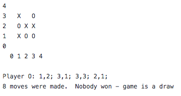
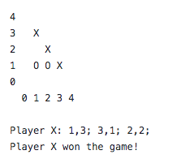
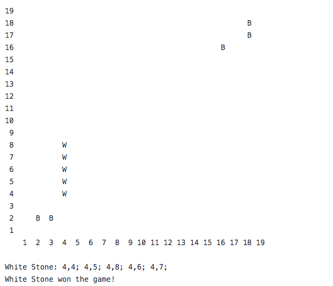

Personal Website
This website is my first endeavor with web development. I built this website using HTML/CSS, and I used GitHub Pages to host my website.
Tic Tac Toe and Gomoku in C++
I programmed a command line interactive game in which two games alternatively take turns until a player wins, the game is a draw,
or either player quits. This was implemented using the rules of both games, object-oriented programming, and polymorphic inheritance. Below are three screenshots from the games.



Islam and Modernity
This paper is the culmination of my Modern Islam course, in which we examined the development of Islam overtime and its interaction with modern influences. In this paper, I discuss
the meaning of modernity and how Islam has developed overtime to meet this ever-changing definition. This course involved in-depth analysis of the meaning of tradition. Click on the title to read it.
The Best of Enemies
This paper was my final project for my Citizen Scientist College Writing course that examined current events. In this paper, I discuss the highly competitive and dangerous political ideology
divisions that have become increasingly hostile in the United States. Click on the title to read it.
The Rights and Wrongs on Both Sides of the Wall
As a final project for my course on the Nuremberg Trials and International Justice, I researched the legality and the military necessity behind the wall, or fence, that separates Israel and Palestine. Click on the title to read it.
St. Joan of Arc Biography - Arabic
This paper was my final project for my Arabic language course for Fall 2019. I researched St. Joan of Arc and wrote a short biography of her in Arabic. Click on the title to read my paper.